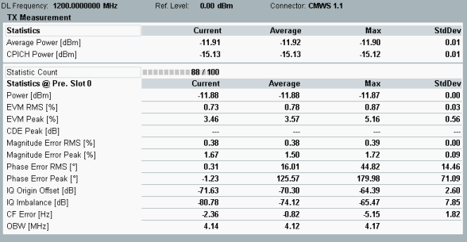

Detailed Views: TX Measurement
This view contains tables of statistical results for the TX measurements.

WCDMA NodeB multi-evaluation: overview of statistical results
The upper table shows the statistics of total NodeB output power and CPICH power. For CPICH power, only channels with channelization code c256, 0 are considered. Each current value is averaged over a frame.
The lower table provides an overview of statistical values measured in the "Preselected Slot". Other detailed views provide a subset of these values:
- Power: power in the downlink carrier
- EVM, magnitude error, phase error, I/Q origin offset, I/Q imbalance and carrier frequency error
- Occupied bandwidth (OBW): width of a frequency range around the assigned channel frequency containing 99% of the total mean power of the transmitted spectrum
For additional information, refer to "Common View Elements".
See also: "TX Measurements"